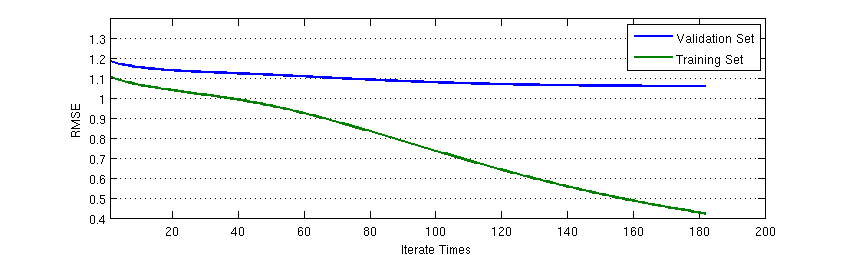

How I build up Chi: 同步率改 v0.3 实现细节
我想我已经好久都没写日志了，因为每天都会学到太多的新东西，虽然想记录下来，但实在是有心无力——太耗时间。不过我想仍然有里程碑意义的成果必须记录下来。这个同步率改 v0.3 就是一个。
Bangumi 番组计划有一个可以内置的查看用户间同步率的功能，但是这个功能很简陋，也很不科学。我通过爬取 Bangumi 用户作品收藏信息，计算出了比较科学一点的同步率，使得品味相近的用户可以互相认识。
稍有常识的人就会看出，这实际上就是一个推荐系统嘛：推荐与你相似的用户。但是目前的同步率改不能完全算是一个推荐系统，只能说起到了某些推荐系统的功能而已。现在的“同步率改”之所以还保留着“同步率”的称法，是为了让 BGMer 在旧同步率和新同步率之间保持无缝概念接受：如果我没有标注某部作品，那么这部作品不应该在同步率上有所贡献。所以在到目前为止，所有的同步率计算都是在作品空间中进行的而非概念空间。
同步率改的 v0.2.1 版是一个比较基本的推荐系统实现：提取用户的所有评分并减去其平均值，得到用户对作品的偏好程度。同时对于用户没有评分的作品，利用这个作品所处于的五个状态——想看、在看、看过、搁置和抛弃——加上一定评分偏置。同时为了防止只有很少评分的用户影响系统表现，系统做了不少 trick，如评分在标准差在零点几以下的用户同步率无视评分、收藏小于 3 的用户无视评分等。这样的设计方法虽然整体思路是正确的，但是存在 ad hoc 太多、评分偏置单一的现象。
同时，在 Bangumi 社区交流的过程中，我发现用户对于不同类型的作品评分有一定的独立性。对于动画和三次元的评分准则，有些用户将其与音乐、书籍类作品相独立看待。
基于这样的事实，我在 v0.2.1 的基础上进行了大量修改，其结果就是 v0.3。他们一脉相承的特点都是：相似度在作品空间中计算，每位用户的向量都以其自己平均分为基准，对已收藏但未评分作品根据作品收藏状态有一定偏置。但是 v0.3 使用了子空间分解技术估计用户已收藏和未评分作品的评分。同时，不同类型作品的同步率分开计算，最后整合在一起形成综合同步率。
评分估计模型
我们记 Bangumi 某一类型（比如动画）作品的 user-item utility matrix 为 $R$，其是一个 $M \times N$ 的矩阵，其中用户数为 $M$，作品数为 $N$。矩阵的元素是元素所在行对应的用户评分减去该用户评分的平均值。用户未评分的元素值记为 0。我们的目的，就是要对某一个用户已标记未评分、收藏状态为 $s$ 的作品进行评分预估：
$$\begin{equation} r_{ij}=u_i v_j^T+bu_{is}+bi_{js} \end{equation}$$其中 $u_{i}$ 是 $M \times Q$ 的 user-concept matirx $U$ 的第 $i$ 行行向量，$v_j$ 是 $Q \times N$ 的 concept-item matrix $V$ 的第 $j$ 列列向量。$bu_{is}$ 是用户状态偏置矩阵 $Bu$ 的元素，$bi_{js}$ 是作品状态偏置矩阵 $Bi$ 的元素。得出评分估计模型的关键就是求出这四个矩阵 $U$、$V$、$Bu$ 和 $Bi$，使得 root mean square error (RMSE)最小，同时又有较好的泛化能力。
$$\begin{equation} RMSE = \frac{1}{\mbox{total rated item number}}\sum\left(r_{ij}-u_i v_j^T-bu_{is}-bi_{js}\right)^2 \end{equation}$$实际上，这个问题就是最小化 RMSE 的最优化问题。假定我们已经有了 $U$、$V$、$Bu$ 和 $Bi$ 的初始估计值，那么我们就可以通过梯度下降的方法估计出使得 RMSE 最小的局部最优解。
在 RMSE 的表达式中，total rated item number 是一个固定的常数，$r_{ij}$ 是已经观测到的评分。我们把最优化的目标函数写成如下形式：
$$\begin{equation} Obj = \sum\left(r_{ij}-u_i v_j^T-bu_{is}-bi_{js}\right)^2+\frac{1}{2\sigma^2}\left(\sum_i||u_i||^2+\sum_j||v_j||^2+\sum_i||bu_i||^2+\sum_j||bi_j||^2\right) \end{equation}$$目标函数的第一项是 RMSE，第二项是为了防止 $U$、$V$、$Bu$ 和 $Bi$ 过大的罚项。此目标函数对于行向量 $u_i$ 的导数为：
$$\begin{equation} \frac{\partial}{\partial u_i}Obj = -2\sum_j\left(r_{ij}-u_i v_j^T-bu_{is}-bi_{js}\right)v_j+\frac{1}{\sigma^2}u_i \end{equation}$$对于其他项的导数可以一一推得，而且计算也很简单，这里就不赘述。
但是目前的问题就是如何求出初始的 $U$、$V$、$Bu$ 和 $Bi$？初始值非常重要，选取一个好的初始值可以得到全局最优解。对于 $U$ 和 $V$，其是 $R$ 的一个近似分解。我们可以用 SVD 求出 $U$ 和 $V$ 的初始值。对于 $Bu$，其是一个 $M \times 5 $的矩阵，其每一行的元素是该用户处于想看、在看、看过、搁置或抛弃作品评分平均值与所有作品评分平均值之间的偏差。$Bi$ 是一个 $N \times 5$ 的矩阵，其每一行元素是该作品在 $R$ 中的不同状态中的评分平均值与 $R$ 中的总平均值之间的偏差。
泛化能力
我们已经推导出了变量的初始值和梯度。通过不断迭代更新 $U$、$V$、$Bu$ 和 $Bi$ 我们可以得到很低的 RMSE。但是矩阵计算量巨大，我们需要在评分系统预估的表现和现有计算能力中取得折中。到底迭代多少次、学习率为多少时合适？

上图是在动画类别中的 RMSE 随迭代次数变化的变化场景。我按照 7:2:1 的比例将所有动画作品评分划分为训练集、验证集和测试集（后来我发现其实这个阶段还不要用测试集）。可以看出，RMSE 在训练集上可以训练到很低，但是更多的迭代次数对验证集的 RMSE 下降作用不大。因此，我选取了在验证集 RMSE 下降曲线的第二个拐点，即迭代次数约为 70 次的位置作为迭代次数。
另外一个参数是学习率的选取。根据经验，学习率选取在 0.0002 时为合适。但即使如此，在计算动画类的时候，学习率在 0.0002、罚项 $\sigma^2$ 在 10 的时候还会发散。因此动画类的学习率在迭代 10 次之后，以 0.00002 的学习率继续迭代下降。
余弦距离
在预估出所有已收藏未评分的作品评分之后，我仍然采用余弦距离计算用户之间的同步率。正如上文所说，这样用户未收藏的作品不会影响同步率。目前阶段，我不想让用户看到某位和他/她同步率很高的人看的是完全不同的动画——尽管它们有相同的概念。
在同步率过去的反馈里，我总是听到有人抱怨有收藏了个位数作品的人进入了他们的前十榜单。但是，只要同步率还是采取这样的保守定义：即在作品空间的余弦距离，这种现象永远不会得到根治。
设想一下，如果用户 A 看过的作品是你的子集，而用户 B 看过更多的作品，他不仅看过 A 的作品，而且还看过更多的你没看过的其他作品，那么可能谁会更高？这个答案毫无疑问是 A 与你的同步率更高——尽管你可能更想让 B 在你的同步率榜单中靠前一些。也就是说，相同条件下，余弦距离的定义使得系统必然偏向收藏数目少的人。
鉴于这样的事实，我想同步率这个玩具，v0.3 就是它最后的一个版本了。如果要以“寻求同好”为目的，就必须抛弃“同步率”这样陈旧的概念。
下一步？
同步率改的设计，我想已经到达了一个里程碑了，而且我想这也完成了我对 matrix factorization 的实践。但是，寻找同好这一终极目标并没有到达。在接下来，对同好的描述可能将不是余弦距离这样直观的模型就能理解的。我已经想好了会怎么做。所以请期待下一个更棒的玩具吧。